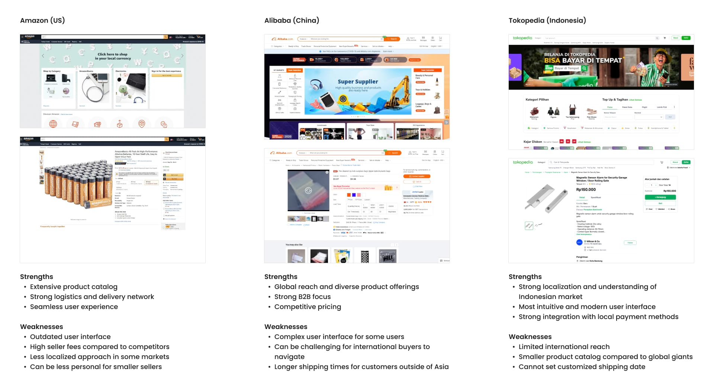
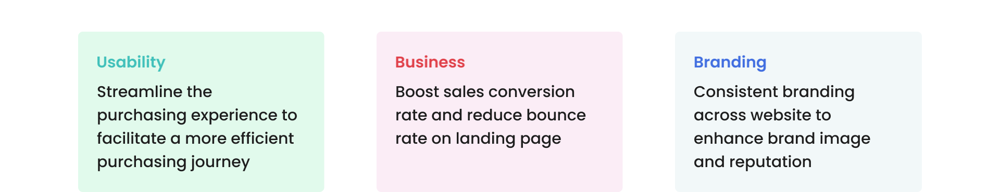

Role
Solo Designer
Tokoplas is a B2B e-commerce platform that enables customers to browse and purchase plastic resin products. The project was initiated due to the numerous usability issues, particularly in the browsing and purchasing experiences, of the existing platform, which was initially designed by a third-party agency with a limited time and budget. These issues resulted in low conversion rate and high bounce rate.
The company's e-commerce website, initially designed by a third-party agency with a limited time and budget, suffered from numerous usability issues, particularly in the product browsing and purchasing experiences. This resulted in low sales conversion rate and high bounce rate.
Before starting the project, I analyzed the existing website design and conducted a competitive analysis of leading e-commerce platforms to identify their strengths, weaknesses, and opportunities for innovation. This benchmarking informed our design decisions and helped us create a more competitive user experience.
In the first few weeks, I met regularly with the management team to discuss the website redesign plan. We highlighted key pain points of the existing website based on customer surveys, analytics data, and my own observations.
We also defined project goals based on previously identified key pain points and competitive analysis.
From the research, data collected, and goals carried out, we identified opportunities in our design using the HMW framework:
We optimized the content by providing various entry points for customers to easily browse plastic resins based on categories, brands, and applications. We also used a prominent full-width banner below the navigation menu to highlight promotions or new product releases. Throughout the redesign, we maintained a consistent visual style aligned with Tokoplas' brand guidelines.
 Comparison of previous and current landing page
Comparison of previous and current landing page
 Full page mockup of the redesigned landing page
Full page mockup of the redesigned landing page
We streamlined the checkout process into a single-page design and reorganized the order summary for better clarity. By dividing content into smaller, card-based sections and improving visual hierarchy, we enhanced the overall browsing and purchasing experience, leading to a smoother checkout process.
 Comparison of previous and current checkout page
Comparison of previous and current checkout page
 Full page mockup of the redesigned checkout page
Full page mockup of the redesigned checkout page